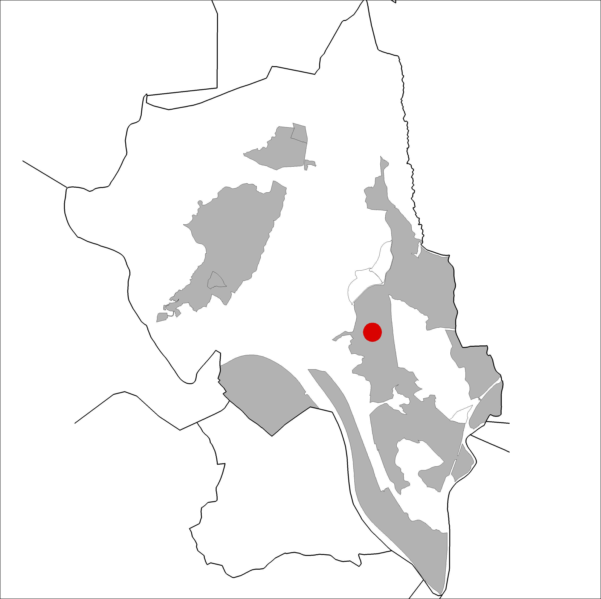
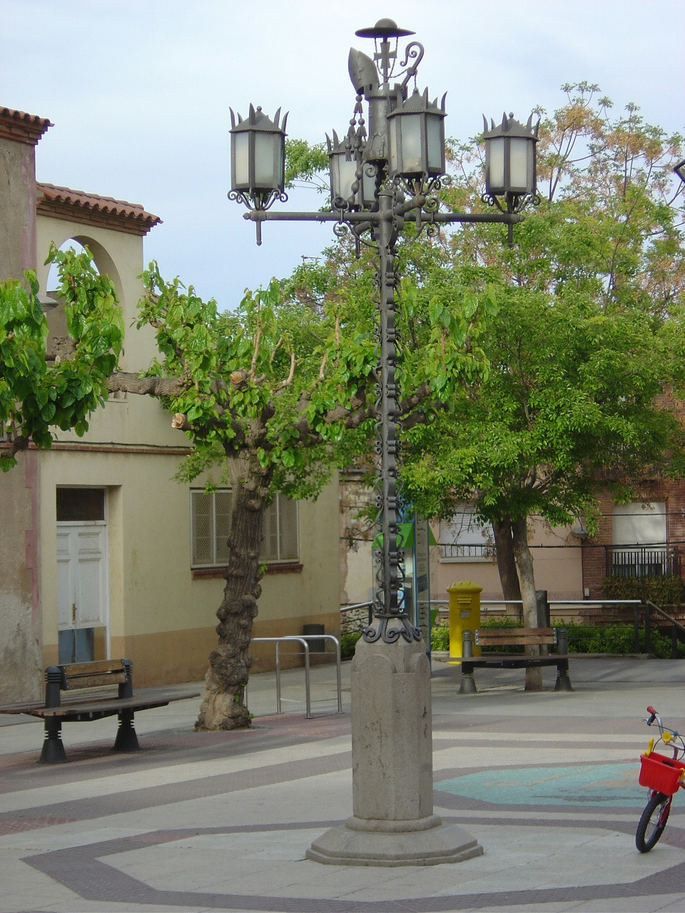

|  |  |
Nom de l’element: Fanal de la Plaça de l’Església
Clau d’identificació: A.01
Nucli o indret: Plaça de l’Església.
UTM: X= 414.992, Y= 4.592.183.
1.1. Època de construcció i tipologia:
Fanal d’àmplia tradició històrica a la vila de Castellbisbal, situant-se al centre de la Plaça de l’Església. Aquest fou creat per en Ferrer Balcells. Té uns 4m d’alçada i està format per ferro forjat i una base de pedra. Compta amb quatre punts de llum situats en els quatre punts cardinals. Com a trets característics cal destacar que incorpora els símbols del castell i del bisbe al capdamunt.
1.2. Estat de conservació:
Molt bo.
1.3. Ús actual:
Patrimoni cultural.
1.4. Accés:
Accés fàcil des de la Plaça de l’Església.
Patrimoni històric local.
3.1. Usos admesos:
3.2. Condicions d’ordenació:
3.3. Accés i serveis:
Accés des de la Plaça de l’Església.
BCIL (Bé Cultural d’Interès Local)